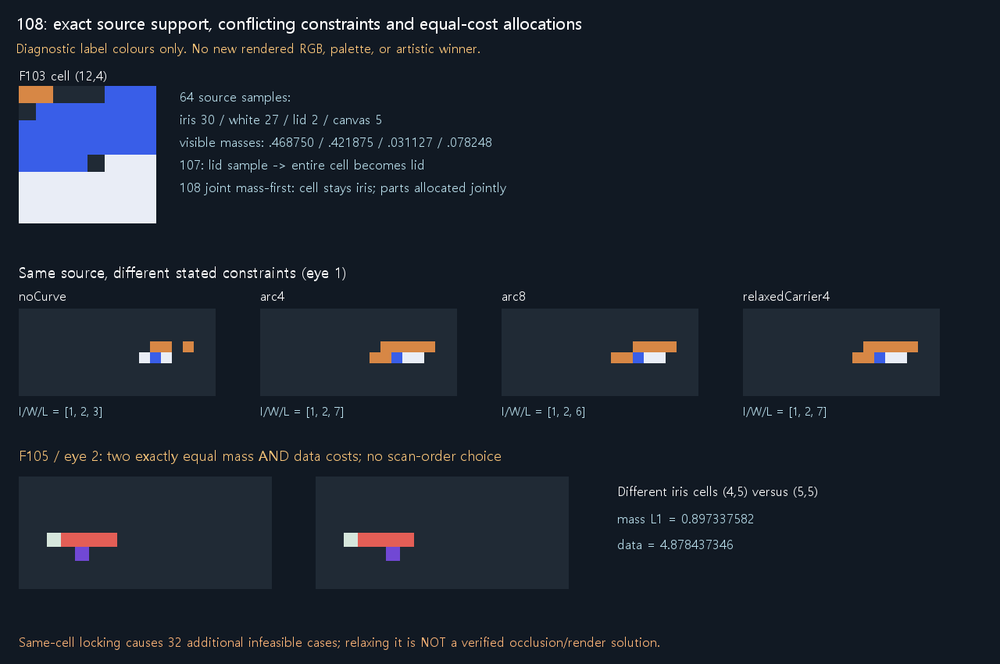
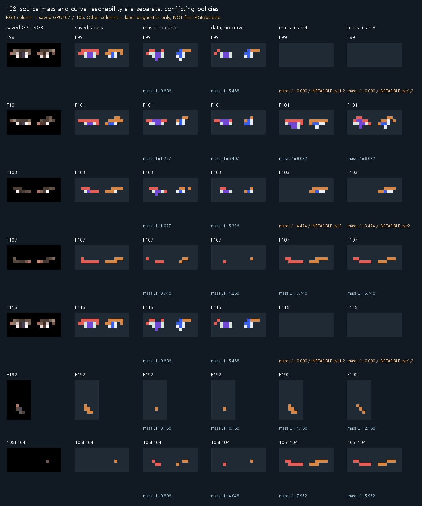

미채택. 새 GPU·Play·제품 수정 0. 107의 실제 54상태와 별도105 닫힌 눈1상태를 사용했다. 아래 색 지도는 라벨 진단이며 새 최종 RGB나 미술 개선 결과가 아니다. 제품77을 유지한다.
107은 앞인 안검 표본 하나를 셀 전체로 확대했다. 이번에는 유한 ROI의 홍채·흰자·안검을 동시에 배치하는 정확한 조합 최적화로 이 전제를 제거하고, 질량 보존과 곡선 연결을 별개의 기준으로 시험했다. 임의 가중치·모델별 셀 수·포즈 조건을 넣지 않았다.

x[c,l]∈{0,1}, Σ_l x[c,l]=1. l은 원래 눈 ID와 part(홍채1/흰자4/안검6), 또는 기존 바탕 유지0이다. 원래 색·재질·UV·Q·팔레트는 수정하지 않는다. 관측된 표본의 source/face 가림을 반영한 하한·상한 기여도를 셀 안에서 적분하여 m⁻[c,l],m⁺[c,l]로 둔다. 외부 머리 가림은 이 배치의 뒤 단계이며 이번 모델에서 제거·재판정하지 않는다.
N[l]=Σ_c x[c,l], A⁻/A⁺[l]=Σ_c m⁻/m⁺[c,l]. 질량 비용은 E_mass=Σ_l dist(N[l],[A⁻[l],A⁺[l]]). 관측 재구성 대용 비용은 E_data=Σ_c,l x[c,l](1−m⁻[c,l])다. 이는 지각적 가독성이나 원형 보존 함수가 아니다. M안은 E_mass 다음 E_data를 사전식 최소화한다. D안은 E_data를 최소화한다. 두 안을 섞는 가중치를 조절하거나 하나를 정답으로 고르지 않았다.
비용은 동결된 이진 부동소수 입력을 공통 2의 거듭제곱 분모의 정수로 바꿔 정확 비교한다. 캔버스/part 라벨은 최소비용 흐름으로 공동 할당한다. 경로 제약은 모든 단순 경로의 서로 다른 셀 집합을 열거한다. 최소비용 흐름 자체가 연결성을 보장한다고 주장하지 않는다. 실제 입력은 눈 사이 후보 셀 겹침0이어서 눈별 분해가 가능했다. 임의 모델에서도 항상 가능하다는 주장은 아니다.
| 항목 | 이번 해석 | 한계 |
|---|---|---|
| 출처/가림 | 현재 part의 확정 우세 표본이 있는 셀만 선택하는 보수적 S안 | 한 표본이 셀 전체를 물리적으로 가시화한다는 뜻은 아니다. AA의 약한 지지까지 의미 특징으로 판정하지 않는다. |
| 특징 소실 방지 | 실제 관측된 눈 ID/part를 적어도 한 셀에서 표현 | 논리적 존재 조건일 뿐 눈매·연결·읽힘 보존이 아니다. 모든 작은 원본 무늬에 보편 적용할 규칙도 아니다. |
| 곡선 연결 | 원래 registered skin-ring upper arc 양끝 셀을 안검 경로로 연결, 4/8연결 별도 비교 | 실제 색소 윤곽으로 검증된 곡선이 아니다. 지지 없는 끝점을 가까운 셀로 몰래 옮기지 않는다. 모든 독립 안검 조각의 연결을 강제하지 않는다. |
| 위치 잠금 완화 R안 | 관측된 같은 눈의 공동 footprint 안에서 실제 존재 part를 재배치하는 수학적 완화 | 렌더 가능 후보 아님. 옮긴 원본 표본과 목적지 carrier 깊이/가림 대응은 아직 정의·검증되지 않았다. 색을 발명하거나 출력하지 않았다. |

검사: 작은 입력432검사, 정수비용/동률329검사, 독립 완전열거36 ROI, 실제440개 눈/정책 계산, 회전·반사 목적값16검사. 원본 대응:55입력/544원본파일, 독립 float32 기여 계산880표본 및 기존107 원본 해시 일치. 54상태는 단일 연속 시퀀스가 아니며 시간 안정성 검증으로 확대하지 않는다. 전체 Pareto 전선도 계산하지 않았다.
다음 구조 검토 질문은 (1) 보존 곡선을 skin-ring 대신 실제 native pigment의 어느 feature-local 경로/띠로 정의할 것인가, (2) 중요 특징 재배치를 허용할 carrier와 source 표본 대응/목적지 깊이를 어떻게 함께 정의할 것인가, (3) 질량과 데이터가 동등할 때 기존 원형·상대배치·표면 대응을 어떤 명시적 기준으로 추가할 것인가다. 새 디자인 숫자나 새 캡처가 반드시 필요한 것으로 판정한 것은 아니다. 현재 관측에 없는 미술정답을 가중치로 숨기지 않았으며, GPU 통합은 타당한 기준이 확정될 때까지 진행하지 않았다.
재검산: python -B check108.py (기존 Python/NumPy). joint108.py: problem/solve/mincost_fixed/data_best/path_sets. 전 상태 해 · 좌표별 충돌/동등해 · 입력·판정 계약. 기존 최신 handoff: docs/ai/PIXEL_ALBEDO_20261030.md.
참고 원리: 정원 제한 할당의 최소비용 흐름. 외부 코드 설치·실행은 없으며, 연결성은 별도 정확 경로 열거와 독립 완전탐색 반례로 검사했다.